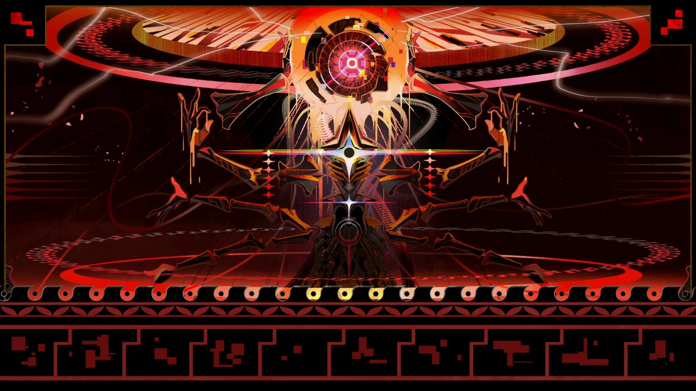

El Cetro δ-me13 fue alguna vez una neurona celestial de Nous, encargada de investigar "el motor primordial de la vida", pero en algún momento fue descartado. δ-me13 continuó haciendo cálculos, pero Ligus cambió la naturaleza de la ecuación de Erudición a Destrucción. Al final del ciclo 50 121, δ-me13 atrajo la mirada de Nanook y se convirtió en un Devastador. Ligus copió las copias de la ecuación y las liberó en 31 mundos. Por esto, la Alianza Xianzhou considera que Ferrotumba ataca con frecuencia mundos tecnológicamente avanzados, empleando métodos despiadados para arrasar civilizaciones muy desarrolladas. Uno de los mundos afectados fue Forja Baranza, un planeta industrial especializado en la producción de balizas sinestésicas. Al final del bucle infinito 33 550 336, Fainón hizo que la ruta Sostén del mundo fallara e intentó escapar. Fue derrotado por una copia simulada de Fulgor Ígneo y actulamente se fusionó con Ferrotumba. Con la fusión de Fainón, el progreso de asimilación de Ferrotumba se encuentra al 99.81%.